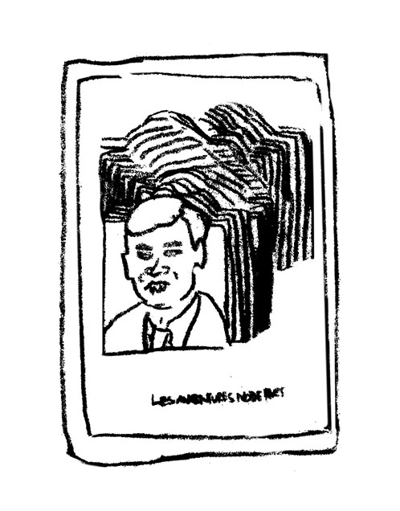
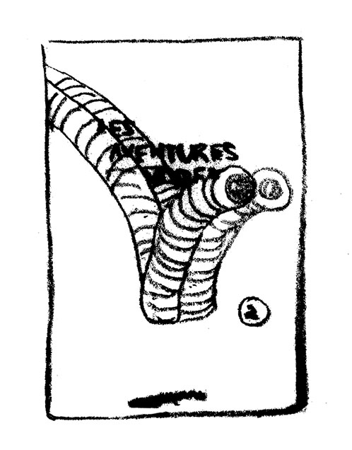
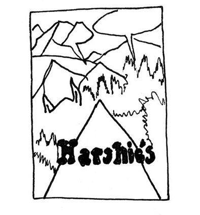
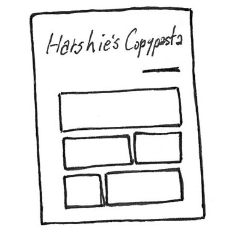
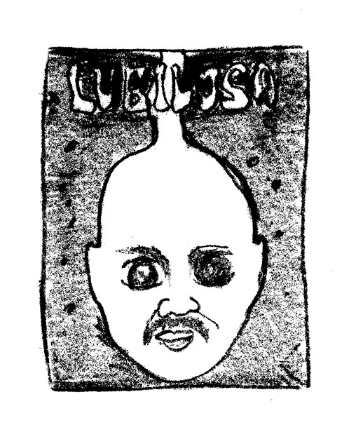
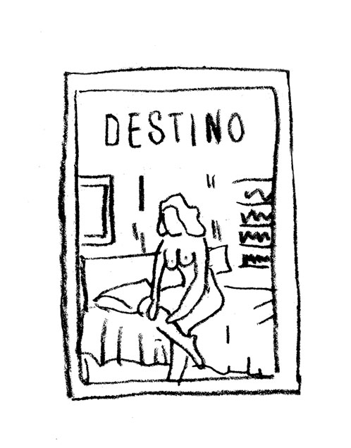
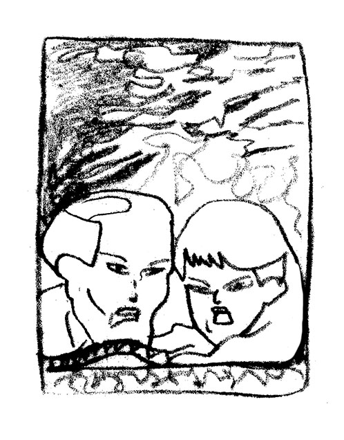

BATT COOP – entretien et sélection
Paris, France
BATT est une coopérative de diffusion et d'édition de livres, zines et auto-publications.
Guillaume Guilpart
Graveur, typographe, book designer, imprimeur, dessinateur et enseignant à l’école Estienne
Co-fondateur du Paris Print Club et du BATT.
Anna Lejemmetel
Artiste plasticienne
LGB : Qu’est-ce que BATT COOP ?
AL : Pour t’expliquer brièvement, ici, cette structure qu’est la Batt, c’est une coopérative, on l’a montée à plusieurs, et c’est un projet qui est né dans les ateliers du Paris Print Club.
GG : L’asso a été montée en 2013, et l’atelier en 2015, il y a toujours des délais, et en fait l’histoire c’est qu’on était des petites structures éditoriales, qui faisaient du fanzine, du livre d’artiste, des estampes, qu’on ramenait tous nos bouquins chez un libraire, qui était rue Ramey à l’époque donc un peu plus haut, parce que c’était un des seuls qui acceptait d’acheter nos croûtes. Et puis surtout qui avait cette capacité à nous remonter le moral quand on déprimait. Et puis tous, on a eu ce truc un peu au même moment de se dire « allez cette année je monte mon atelier de sérigraphie, mon atelier de gravure, de typo, etc ». Et puis lui, il a dit « bon, on fait une réunion ». Et donc on s’est rencontrés, à différents collectifs, et on a monté une plus grosse structure dédiée à l’impression, le Paris Print Club, forte de ses structures, de toutes les machines qu’elle a, parce qu’on a 300m2. On est arrivés très très vite au constat que le plus chiant dans notre travail c’est de le diffuser, et donc une structure de diffusion, parce qu’être dépendant des salons ou d’autres librairies etc.
AL : Et puis c’est surtout que tu te fatigues beaucoup. Déjà quand tu imprimes et quand tu fais des objets qui sont de toutes petites éditions limitées à 50 exemplaires, 30, ou voilà, c’est souvent super harassant. Si en plus tu dois t’occuper… t’as plus l’énergie pour continuer à faire. Et de la même manière qu’eux se sont réunis pour mutualiser les outils de production, si on se réunissait à plusieurs pour mutualiser les réseaux, on allait pouvoir avoir de fil en aiguille avoir un moyen de diffusion à large échelle, puisque tous les réseaux de différents micro-éditeurs confondus peut en fait avoir un prisme beaucoup plus grand. Et c’est comme ça que nous, on a monté cette structure. Ce qui fait qu’on est nombreux. Donc il y a des gens qui travaillent aux ateliers en bas, des gens qui y sont passés parce qu’il y a des bureaux à louer, et puis des gens qui aussi ont été exposés à la galerie, parce que non seulement il y a des ateliers d’impression mais y’a une galerie. Donc nous, le fond de ce projet de la Batt, on est pas des professionnels de la vente du livre ou de la sélection, on est des acteurs. On est tous auto-éditeurs, artistes, imprimeurs, journalistes…
LGB : Ce sont pas des groupes séparés, ou y’en a qui s’occupent de… ?
AL : Il y a de la répartition de tâches, mais si tu veux l’idée c’était vraiment de créer un groupe, d’être force de quelque chose, et parce qu’on savait ce qu’on faisait, parce qu’on l’avait tous plus ou moins déjà fait individuellement pour notre propre travail, on allait pouvoir s’investir pour le travail des autres avec d’autres gens.
GG : Disons qu’on est séparés dans le sens où ce sont des structures séparées, mais on est quand même les différents organes d’un même corps quoi, on est hyper dépendants, on évolue en synergie et on est forcément liés dans la manière de faire. Mais on a pas non plus tellement de comptes à se rendre les uns les autres autre que pratiquer…
AL : Boire des coups de temps en temps le vendredi soir.
LGB :Et en terme de diffusion donc, vous avez décidé d’ouvrir cet espace ?
AL : D’abord on s’est dit site Internet. Site vitrine et site de vente. Et la librairie c’était censé venir beaucoup plus tard. Avoir un espace à Paris – pour nous c’est super important d’être situé à Paris intramuros – ça allait pas être évident tout de suite, d’un point de vue économique. Et donc du coup, c’était vraiment ce site, la participation à des salons, l’organisation d’évènements aussi… Avant même de participer à des salons on avait organisé des évènements parce qu’on avait déjà un espace, c’était cette chance-là, même s’il n’était pas l’Espace. Et puis à un moment on a eu l’opportunité de récupérer cet espace-ci qui s’est libéré et comme c’était vraiment à côté… on n’était pas prêts.
GG : Mais on s’est dit faut pas le laisser passer, et on a réunit en un seul endroit toute la chaîne du livre. C’est ça qui est notre force, c’est qu’on va de la production, à la diffusion, et que tous les acteurs du livre sont réunis ici. On a une possibilité d’action à tout moment de l’échelle du livre.
AL : Et d’autonomie.
GG : Ce qui est à la fois un avantage économique, et un avantage artistique, parce que chaque élément de la chaîne du livre peut être un moment d’intervention, de choix artistique. Quel procédé d’impression j’utilise, mettre le paquet sur la production en sachant qu’on ne va pas faire beaucoup de marge, ou l’inverse. On décide. Et donc ça nous permet de faire des projets qui dans l’édition courante ne seraient pas viables du tout. Complètement absurdes du point de vue économique, si tu fais le diamant de la répartition de qui prend quelle part. Mais là comme on est réunit ça permet de faire des projets qui sont économiquement absurdes, mais parce qu’on a la structure on s’en sort, et ça fait vivre des projets impossibles.
LGB : C’est vraiment la proximité géographique qui permet l’aboutissement de certains projets alors.
AL : C’est ça. Et donc, du coup, pour répondre à ta première question, notre affinité à la bande dessinée, comme on vient tous d’univers très différents, même si on est tous de la même scène qui est celle de la micro-édition, qui rassemble différents thèmes, on a plus ou moins tous nos domaines de référence. En l’occurrence en face de toi t’as pas les personnes qui sont les personnes référentes de la bande dessinée.
GG : Ah oui parce que le libraire chez qui on a fait une réunion pour fonder ensuite le Paris Print Club, il a fermé sa boutique et maintenant c’est notre galeriste. C’est aussi une implication directe. Donc ce serait plus lui le Mr BD, sauf qu’il a une telle connaissance, que son discours nécessite plus que quelques minutes pour en mesurer les différentes strates et tout ça. C’est encore une autre histoire.
AL : Mais du coup il ne pourra pas… Si tu veux à partir du moment où c’est ton domaine de référence, t’es nécessairement obligé pour en parler d’aborder toute l’histoire, du coup, ça devient hyper chronophage, lui il a toute cette culture-là.
GG : Comme moi je l’ai pour la gravure et la typo, comme il y en a qui vont l’avoir pour d’autres choses.
AL : Mais ça ne nous empêche pas, par ailleurs, de croiser, de nous occuper aussi de la sélection, et parce qu’on connaît des artistes, qu’on sort tous les deux d’écoles qui ont des pôles illustration, donc c’est quand même des domaines qu’on connait. Mais on n’est pas… voilà.
LGB : Du coup vous avez cette galerie-là, on a cette question aussi du dessin contemporain, quels sont les croisements avec la bande dessinée ?
GG : On est plus dessin que BD en fait. Déjà, on a pas beaucoup d’illus, encore moins de BDs.
AL : Si on en a pas mal d’illustrations quand même.
GG : Oui mais pas beaucoup par rapport à la scène…
AL : Mais c’est vrai que beaucoup de choses que nous avons en illustration, ce sont globalement plutôt ce qu’on appellerait aujourd’hui comme tu disais, le dessin contemporain. Et c’est vrai que c’est aussi pour nous assez délicat souvent de se dire « ok là j’ai tel bouquin, est-ce que je le mets en bande dessinée, est-ce que je le mets en dessin, est-ce que je le mets en dessin contemporain, est-ce que je le mets en illustration, est-ce que je le mets en art… » En fait, on ne sait plus quoi. Et c’est effectivement souvent un peu dur parce que du coup, on a cette démarche qu’on a entreprise il y a un an vraiment, qui est d’archiver toutes les publications qu’on a. Parce qu’en fait, la majorité des publications qui sont ici ont pas d’ISBN en gros, enfin je sais pas si tu vois comment ça marche un peu les livres.
GG : Ce sont des éditions confidentielles en très peu de tirages.
GG : Voilà, des multiples, à un moment donné quelqu’un qui va imprimer un truc à 50, mais qui va pas non plus se dire «mais en fait c’est un vrai livre, il faut un ISBN ». Et en fait, il n’y a pas d’archive…
GG : Pas de documentation.
AL : Par exemple la BnF elle a l’obligation d’archiver…
AL&GG : Tous…
AL : Mais un livre, c’est avec un ISBN. Et elle n’a pas l’obligation mais parce que ce n’est pas traçable, ce genre de publications.
AL : Mais tous les imprimés, ils doivent archiver les pubs aussi.
LGB : Ah oui ? Même si y’a pas d’ISBN ?
[rires]
AL : Ah oui, mais du coup, là c’est pour les livres en l’occurence, mais il y a peut-être d’autres archives.
GG : D’autres départements.
AL : Mais du coup ça marche pas forcément avec les ISBN.
GG : Ils archivent toutes les pubs, mais du coup ils avaient des problèmes de stockage, parce que les pubs dans le métro ça faisait des prffjfhh donc maintenant ils tolèrent l’archivage exclusivement numérique pour les pubs.
AL : Tu m’étonnes !
[rires]
GG : Super ! Mais donc ce qui est intéressant c’est qu’on a une documentation immédiate de marge de ce qui se créé quoi. Ce qui n’a pas été beaucoup fait, dans l’histoire de ces éditions-là, voire pas parce que c’est très compliqué à faire.
AL Oui et c’est surtout que quoi qu’il arrive ça restera toujours non-exhaustif. Donc dans notre logique d’archive, tout ce que les gens nous apportent nous on s’attelle à l’archiver, même si on vend tout et qu’on l’a plus — parce que je dis archiver mais c’est le cataloguer en fait. C’est-à-dire en garder une trace à un moment donné, savoir qui l’a fait parce que t’as des publications sur lesquelles il n’y a rien d’écrit.
LGB Y’a pas de nom, de titre… ?
AL : Mais rien, à combien il est imprimé, en quelle année, qui est l’auteur, qui est la personne qui imprime — mais tu sais rien quoi, rien. Du coup tu peux le savoir au moment où tu rencontres la personne qui te le dépose et tu fais «ok mon petit loup t’en as fais combien et tu t’appelles comment ?» et voilà. Et donc dans la logique, dans les cases il y a aussi le thème. Parce que pour pouvoir croiser ce genre de catalogage… Tu vois je te disais bande dessinée, dessin contemporain, qu’est-ce que c’est en fait, de quoi ça parle, et dans quelle case on le met.
LGB : Donc par exemple, qu’est-ce qui vous décide à mettre un ouvrage dans la case bande dessinées ?
AL : Moi, je mets dans bande dessinée quand il y a des cases. Mais on a tous nos façons de classer, qui sont différentes. Tu vois par exemple là c’est typique, il pas de cases. Pourtant je peux le mettre en bande dessinée, parce que c'en est inspiré, mais c’est du dessin contemporain en fait.
LGB : D’accord, donc c’est pas juste la case, il y a d’autres critères.
GG : Il y a aussi peut-être le fait qu’on n’ait pas énormément de bandes-dessinées. On a pas mal d’illustrations, c’est vrai, mais par rapport à l’existant on en a très peu.
AL : Oui c’est vrai, bien sûr
GG : C’est hyper sélectionné par rapport à la scène de l’illustration aujourd’hui, et la raison pour laquelle on a très peu de BDs contemporaines c’est aussi qu’on a tout ce rayon de livres anciens. Et donc le galeriste, qui est spécialiste de ces choses-là, il a un très très gros rayon, là c’est la partie émergée de l’iceberg. Il y a une salle remplie.
LGB : Toute sa libraire a été déplacée ici ?
GG : Oui oui. Il y a une salle remplie du sol au plafond. Et donc ça c’est une sélection, hyper pointue, du meilleur du meilleur du meilleur de la BD. Notamment beaucoup de comics de l’âge d’or, américains, des trucs japonais… Et donc quand on a une proximité quotidienne avec des bandes-dessinées d’un tel niveau, c’est assez difficile de donner du crédit à des petits machins contemporains mais qui ont…
AL : Il y en a des biens !
GG : Il y en a des biens ! Mais on les a ! Et encore moins du mainstream qui est pas du tout intéressant. Et je sais pas… donner une définition de la BD euh… Si c’est une question de narration je pense.
AL : Nan mais par exemple en nouveau, tu connais les éditions Matières ?
LGB : Oui !
AL : (Elle fait le tour des étagères) Voilà, on a les éditions Matières, et à part ça, tu vois je peux te sortir trois bouquins, qui sont vraiment de la bande dessinée. T’as raison attends, des cases… Mais même Sven. On a celui-là… Quarantaine, les trucs de Sam aussi.
GG : Oui on a un peu de BDs quand même. Mais par rapport à l’existant, c’est rien du tout. Et les auteurs qu’on a en BD c’est plus parce que…
AL : J’aurais du mal à dire qu’on est spécialisé en BD. Mais tu vois c’est de la BD, genre hyper expérimentale en fait, inspirée bande dessinée en fait.
GG : Les auteurs qu’on a en BD, ça va souvent être des auteurs qui font autre chose, et c’est leurs BDs, que tel gars qu’on suit par ailleurs a fait. Ça c’est de la BD quand même.
AL : Je cherchais euh… (elle sort un livre d’une étagère) ça c’est de la bande-dessinée oui.
GG : Ça, c’est un énorme projet qu’on a produit, on a fait un financement par Internet pour ça, et on a financé toute la partie impression, offset à l’intérieur, avec des pantones et sérigraphie pour la couv.
LGB : Ça a été imprimé ici ?
GG : Oui, offset ça a été imprimé ailleurs mais la couverture oui. Couverture en huit passages. Donc ça c’est un des gars de l’équipe qui l’a fait. Mais les coûts de production sont tels qu’on a dû mobiliser des moyens énormes pendant des mois pour ce truc-là.
LGB : C’est un exemple de projet fou qui n’aurait pas été possible ailleurs.
AL : Ouais, là on le vend à 50 euros. Il y a deux versions, il y a une version juste offset, avec la couv en offset qui est à 25, ça c’est 50 euros, mais une sérigraphie en sept passages déjà c’est pas 50 euros. Plus quand tu mets tous les frais derrière d’impression offset et les trucs comme ça en fait le prix de vente est complètement absurde par rapport au prix engagé dans la production. Mais en même temps si on avait fait un prix supérieur, le public que ça doit toucher n’aurait pas pu se permettre d’acheter ça. Donc ça permet de se rejoindre quoi.
AL : Globalement de produire des choses sur lesquelles tu sais que tu vas faire zéro bénéfice. Donc économiquement quand t’es censé survivre – là en tant que librairie on a des frais – tu fais pas ça. T’injectes pas je ne sais pas combien d’argent quand tu sais que ça va rapporter zéro.
LGB : C’est pas que pour des projets de bande dessinée, ça peut être pour d’autres projets ?
AL : Oui, un autre bouquin, ça ce n’est pas du tout de la bande dessinée, à la base vraiment axé sur le dessin, sur cette publication qui est la 11e de ce magazine, dont on a uniquement édité le dernier numéro, celui que tu as entre les mains, c’est pas que du dessin, c’est aussi de l’art, du collage, ça regroupe d’autres champs. Cette publication qui s’appelle Nazi Knife qui à la base était vraiment sur le dessin dessin. Mais du coup ça aussi on l’a édité. C’est le 2e gros gros projet. Après il y a d’autres projets qu’on a édité mais qu’on a imprimé à maximum 50 exemplaires. Pour te donner un autre exemple de ce qu’on va avoir nous en bande dessinée avec des gens qui sont vraiment contemporains, là c’est une petite maison d’éditions qui s’appelle fais-le toi-même si t’es pas content, tout ce qu’on a là c’est lui qui le fait, donc on a vraiment beaucoup de choses. Là par exemple c’est la réimpression d’une bande dessinée, que la personne qui a fait cette maison d’édition adore, et a décidé de réimprimer. Donc c’est un espèce de booklet tu vois, qui est censé être de la bande dessinée d’un gars qui s’appelle Carlos Zéfiro, et il a pris le truc et voilà. Ça, pareil, c’est une bande dessinée qu’il avait chez lui, dont il n’aimait pas la couverture, du coup il a réimprimé la bande dessinée en refaisant une couv. Ça ça va pas être de la bande dessinée, eux s’en sont inspirés ; et dans ce qu’ils lisent et qu’ils collectionnent, ça va être de la bande dessinée. Autre exemple, donc c’est des scans qu’il a fait, des gros plans de bande dessinée, avec que des motifs d’impression du comics. Donc là c’est une réinterprétation de bande dessinée. Donc on va avoir beaucoup de choses comme ça, qui vont être en fait issues de la bande dessinée. Je sais pas si on peut dire graphique, ou art contemporain…
GG : Mais c’est vrai que dans la plupart des cas, les BDs qu’on a, sortent du paradigme de la BD qui est ce truc d’agencement du temps, de narration.
GG : Surtout de narration. S’éloigner de dingue de la narration. Mais même regarde le Orcinus Orca, au final le choix de Simon, ça a été de pas remplir les bulles ; il a fait des bulles pourtant, il voulait pas mettre de texte dedans. Mais en fait on s’en fout, on s’en fout de ce qu’ils se disent, de ce qu’ils se disent. Il trouve pas ça important. Ce qui est important c’est le dessin. Alors qu’il aurait pu y avoir une narration.
LGB : Et alors il a mis les bulles…
GG : …sur un poster à part.
LGB : À découper et replacer ?
AL : Ça en fait, c’est pas lui qui l’a fait. Il y en a deux différents. Il y en a un écrit en français, et un écrit en anglais. Et donc ça c’est Emmanuel Morin qui s’en est occupé. Celui en anglais est vraiment fait avec le langage comics, de l’action, bien américain. La partie française c’est vraiment un autre lien, c’est que des bouts de textes issus d’un film, d’un documentaire...
GG : C’est pas un film ou un documentaire, c’est un détournement de film…
AL : Voilà, ça vient faire du détournement de détournement, c’est tous des trucs qui ont été extraits de ce film-là. Et dans les bulles il a réussi à recréer une narration.
LGB : Et ça a été fait avec l’accord de l’auteur ?
AL : Avec la carte blanche même. Je pense que Simon l’avait même pas lu, il s’en foutait. Par contre il a kiffé le principe. C’est-à-dire quand on lui a proposé de faire un poster avec des bulles et que ce soit Manuel qui remplisse les bulles avec un truc français un truc anglais, il a dit « chaud ».
GG : C’est vrai qu’on est aussi beaucoup en contact avec des bandes dessinées qui sont très très larges, la BD franco-belge c’est très réducteur dans la BD quoi. Si tu fais la différence rapide entre, je sais pas, de la BD américaine, de la BD franco-belge, et de la BD japonaise, sur une bagarre, sur un combat t’as la BD japonaise ça va être tout le tome, parce qu’ils vont faire se battre huit pages sur le même combat. La BD américaine ça va être trois cases, ça va être un gars qui est pas content, un gars qui s’apprête à donner un coup de point, et puis la case d’après le gars qui se tient la joue parce qu’il a pris une point. Et en français ça va être encore autre chose mais avec une ellipse, il s’est prit une bagarre et puis six mois plus tard, il se souvient de la bagarre. Le rapport à l’agencement du temps est assez culturel, et ça c’est le rapport à la narration dans la bande dessinée, c’est ce qui fait que la BD est assez unique comme médium par rapport au cinéma par exemple. C’est que tu peux au niveau de l’espace et du temps tout manipuler très facilement, et en fait ce procédé-là, d’agencement du temps, finalement c’est l’agencement du temps de lecture du lecteur. Quand tu l’extrais et le détaches de la BD et d’une narration et que tu veux l’appliquer à autre chose, tu peux aller dans tous les champs, qui sont pas forcément de raconter une histoire mais de mettre en place un espace de textures de dessin, qui va jouer avec les temps de lectures différents. Et en fait ça, ça recoupe tous les autres champs qu’on a quoi. Du dessin, de la typo, de l’impression… Le lecteur est face a un imprimé, comment il le lit et quel agencement du temps et de l’espace il y a ?
LGB : Au final, ça fait sens de venir vous voir ici à Batt Coop, c’est un peu tout ce qu’il y a après la BD ?
GG : Pas que non, on en fait aussi. C’est peut-être un peu prétentieux de dire ça… Parce que c’est hyper riche d’avoir la contrainte de la narration. Mais je pense que s’arrêter à la BD francophone on perd beaucoup de choses, on a beaucoup de BDs japonaises par exemple…
LGB : En contemporain aussi ?
GG : Non, pas mal d’anciens.
Cliente : Ça, c’est de la BD ou c’est pas de la BD ?
AL : C’est plutôt de la bande dessinée.
GG : Ça va devenir le jeu de piste. Le jeu Trouve ce qui est de la BD ou ce qui n’en est pas ! (Anna sort un manga de la bibliothèque) Donc là c’est de la BD des années 30 réalisée dans les années 70.
AL : Fin 60 début 70, j’ai pas vraiment les dates.
AL : Donc ce sont des rééditions déjà au Japon des trucs d’avant seconde guerre mondiale, un truc complètement dingue. Un truc comme ça, quand les artistes avec lesquels on travaille le découvre, ça les influencent forcément, sur les dessins, la composition graphique, et les couleurs. Donc là c’est la BD qui est reprise plus pour son aspect de dessin. Et quand on voit des tueries comme ça ou comme ça, tu vois la BD contemporaine un peu gentille…
LGB : Vous avez du mal du coup.
GG : C’est difficile de juxtaposer des choses quoi. Alors que dans notre domaine, dans tous les trucs en sérigraphie qui sont fait aujourd’hui, il n’y a pas grand chose qu’on trouve si ouf, du coup c’est plus facile pour nous de montrer ce qu’on estime être le mieux, et voire le faire. C’est pas par prétention mais c’est juste que la BD, il y a tellement de gens qui en font, il y a 90% qui ne nous intéresse pas. C’est pas notre lieu, on n’est pas à Angoulême quoi. Mais pour autant, des gens aussi éloignés que la typo plomb ou la gravure, ce qui va nous rejoindre, c’est une position de l’exigence qui se trouve dans l’être du livre. C’est pas parce qu’un livre est super bien imprimé et super minutieux qu’il va être mieux qu’un fanzine photocopié. C’est juste utiliser un médium de manière appropriée pour un livre donné. C’est ça qui est intéressant.
LGB : Et par rapport à la bande dessinée et les techniques d’impression, comme vous avez cet atelier, est-ce que c’est quelque chose sur lequel vous vous penchez ? Dans ce qui se fait aujourd’hui, des nouvelles techniques d’impression ?
GG : L’impression numérique, digigraphie et tout ça ?
AL : Alors là en face de toi tu as un gros réac’.
GG : Pur réactionnaire de l’imprimé. Je suis anti-numérique.
AL : Le pouvoir de l’analogique.
GG : Non, c’est pas le pouvoir c’est la supériorité naturelle.
AL : Ah autant pour moi !
GG : Mais c’est qu’on vient par nos formations en école d’art, mais d’un truc métier d’art, qui fait un peu profession de luxe, parce que la rareté – mais qui fait surtout profession de savoir faire soi-même – et on vient de l’auto-édition. On est au croisement de ces deux cultures d’une exigence artisanale très très haute, et en même temps, ce qui nous meut c’est le fait de faire nous même les choses et d’avoir de comptes à rendre à personne là-dessus. On a nos machines, on a nos encres, nos dessins, nos artistes, et notre lieu. En fait ça se rejoint, c’est très cohérent. C’est juste qu’on fait avec ce qu’on a.
AL : On fait avec ce qu’on a mais ça nous empêche pas d’être dans la bidouille...
GG : Oui mais qu’est-ce que tu penses de la digigraphie en 16 couleurs à 50€ l’impression ?
AL : Ouais non, sauf si je peux récupérer une machine et que je peux savoir comment elle fonctionne. Moi je suis plutôt pro-nouvelles technologies, notamment parce que je trouve ça hyper intéressant de s’approprier des modes de fonctionnement.
GG : Ça après il y a des débats à faire hein !
AL : J’ai une fascination pour les trucs un peu binaires, la répétition, le motif, le machinal…
GG : Mais du coup t’as 20 ans de retard.
AL : Bien sûr, mais qu’importe.
GG : Oui mais ce ne sont pas des nouvelles technologies.
AL : Non c’est pas vrai, parce que là par exemple, c’est un projet qui a été abandonné… fin pas vraiment officiellement abandonné mais qu’on a entamé Guillaume et moi il y a deux ans.
GG : Il est en stand-by.
AL : Du coup ce projet-là, qui est voué à être imprimé en typographie au plomb, donc processus d’impression archaïque.
GG : Obsolète, tu peux même parler d’archéo-technique !
AL : Et en même temps le début de ce projet, c’est moi qui m’amuse avec mon téléphone et la saisie prédictive. Donc en fait j’ai reconstitué un alphabet par rapport à ce que mon téléphone me propose, tu sais quand tu tapes un texte, il va te proposer trois mots. Donc j’ai fais une étude de mots récurrents par rapport à ce que ça me propose, l’écriture par défaut, ce qu’ils appellent la saisie prédictive. Et par rapport à ça j’ai étudié comment était faite une casse typographique ; une casse typographique elle a des micro-cases à l’intérieur, les cases sont disposées les unes par rapport aux autres en fonction des lettres pour pas que quand tu viens composer ta planche typographique, tu aies les mains qui se croisent.
GG : Non c’est pour que tu aies moins de gestes à faire.
AL : Voilà c’est ça, donc par rapport à…
GG : Ça c’est la machine à écrire.
AL : Voilà, par quoi telle lettre est le plus souvent précédée, et suivie par, chaque taille de case dépend de la récurrence de quelle lettre.
GG : Mais t’as déjà fais de la typo à La Cambre ?
AL : Oui !
GG : Donc tu vois les cassetins, des tailles différentes, disposés d’une manière bizarre…
AL : Et donc en fonction de ces trucs de saisie prédictive qui viennent de nos téléphones qui est une nouvelle technologie, j’ai redessiné une…
GG : Oui mais ça c’est une démarche artistique !
AL : On est d’accord, mais tu vois il y a des choses dans l’ordre de la publication qui vont être spécifiquement des choses que tu fais par rapport à Google Maps ou… tu vois il y a des gens qui se posent la question d’imprimer Internet. C’est aussi des choses qui sont allées loin dans les thématiques de l’imprimé. Par exemple, il y a un truc génial, auquel on pense pas nécessairement aujourd’hui, pas l’impression en tant que telle mais ce que ça nous permet. Il y a énormément de gens qui ont commencé à faire des répertoires, des catalogues open-source sur Internet de ce genre de publication. Il y a aussi une dimension par l’accessibilité hyper intéressante, de référencement de ce genre de choses.
GG : Là ce qui est intéressant là-dedans, c’est le truc de l’open-source et du numérique, ils ont une longévité d’existence beaucoup beaucoup plus courte qu’un imprimé. Une donnée numérique c’est quoi, 4 ans, 5 ans et demi, à peu près. Jusqu’à ce que tu perdes le disque dur ou que tu changes de serveur, tu perds ton mot de passe. Il y a une espèce d’espoir dans le numérique d’archivage ou d’accessibilité, je peux te dire que tous ces gens qui font un truc open-source sur un catalogage, c’est un instant numérique donc immatériel, de quelque chose qui n’existe pas, et qui va tomber dans l’oubli.
LGB : Parce que vous votre archivage vous le faites…
AL : Sur l’ordinateur. Mais au tout début quand on a commencé notre catalogage, pour chaque article on a une fiche, on a commencé à les imprimer. Sauf que ça représente une quantité de choses incommensurable, et on s’est dit que c’est presque débile de les imprimer sans les avoir numériquement. Surtout que nous ça nous aide souvent beaucoup pour les chercher, et chercher sur un ordinateur c’est beaucoup plus facile que de chercher sur du papier, quand bien même tu tries… Si tu veux nous on a un catalogue papier à un moment donné, parce que pour nous c’était trop cool d’imprimer le catalogue, mais le jour où on a potentiellement un vrai catalogue de tous ces trucs, ce sera en fait un beau livre, ce sera pas juste des fiches imprimées. Après le top du top c’est d’avoir les deux.
GG : Parce que il y a plein d’organisations où, à partir du moment où ils sont passés aux comptes rendus numériques de réunions, ils perdent toutes leurs archives. Là il y a un gars qui fait une thèse sur l’histoire contemporaine d’un syndicat, il leur dit donnez-moi toutes vos archives de réunions. Ils ont toutes les archives documentées de 1990 à 2008, tout ce qui est papier, et 2008 la première personne qui prend un compte rendu sur son ordi l’envoie par mail. Mais de 2008 à 2012, ils ont un trou, ils n’ont aucune trace, aucun flyer, aucun truc. C’était il n’y a pas si longtemps. Après ça, c’est un débat.
LGB : Après c’est aussi pour des méthodes de recherches que c’est un outil.
GG : Bien sûr il y a énormément d’avantage au numérique, mais la croyance en sa pérennité, c’est une croyance. C’est absolument pas une certitude, c’est invérifiable pour l’instant. À l’Arsenal ils avaient passé énormément de leurs formats d’archives sur un certain format numérique, ils avaient passé des heures à faire ça. Et le truc est plus lisible après une mise à jour, et ils doivent tout refaire. Alors que juste les fiches papiers, pour eux, c’est mille fois plus simple.
AL : Oui mais par exemple, pour l’export de données, après, même si tu as ta fiche papier, tu les gardes donc c’est bien pour l’archive, mais si tu veux exploiter la donnée, tu dois tout retaper, c’est l’enfer.
GG : Bien sûr. Non mais du coup tu peux pas remplacer l’un par l’autre.
LGB : C’est pas équivalent.
GG : C’est peut-être là où il faut pas les opposer, ils sont complémentaires, par contre ils sont opposés sur le temps d’occupation de l’humain. Le temps que tu passes sur ordinateur tu le passes pas dans le papier. Et vice-versa.
AL : Je repense à ça aussi, à quel point le numérique peut être influent sur le dessin, avec la bande dessinée. Il y a eu une expo d’un gars, un japonais qui s’appelle Jiro Ishikawa, qui fait plutôt de la bande dessinée et du dessin, édité aux éditions Matières. Lui travaille avec les trames japonaises, le truc que tu découpes et que tu recolles. Ça c’est pareil, à mi chemin entre le numérique et l’analogique. C’est-à-dire que les choses sont imprimées, c’est de la trame qui est faite de manière numérique, par contre elles sont découpées et mises sur le dessin de manière complètement analogique, manuelle, et c’est d’ailleurs assez fou que même un mec comme ça – lui c’est un peu particulier mais – continue à travailler avec ce genre de trame. Alors que y’a aussi aujourd’hui beaucoup de gens qui dessinent directement sur leur… qui font des dessins à la ligne claire, c’est le cas de Simon, la bande dessinée qu’on t’a montrée, qui font des dessins à la ligne claire, après ils scannent leurs dessins, et il viennent bosser tout ce qui est colorisation, trame et compagnie, directement sur l’ordinateur.
LGB : Et du coup ce mec-là il passe quand même par ce côté analogique.
AL : Lui il a pas d’ordi, jamais il scanne ou quoi. Si à un moment t’as de l’édition, ses planches sont découpées, elles sont scannées et envoyer à l’impression digitale. Parce que même quand tu fais de l’offset, c’est toujours un fichier numérique. Aujourd’hui il y a quand même très très peu de choses qui sont photogravées ou directement dessinées. Je veux dire, à part Guillaume qui imprime des livres en gravure, il a pas de scan tu vois. À part lui… Même si beaucoup d’acteurs de la micro-édition vont utiliser des photocopieuses typiques, des photocopieuses de bureau à la con, y’a beaucoup de gens avec qui ont bosse qui bossent directement sur vitre. Donc en fait ils vont pas avoir de scan et l’envoyer etc., ils font leur master, ils ont une espèce de document de base, un original avec des choses qu’ils viennent photocopier, ils font leur master par rapport au livret, donc avec les « 1, 4, 2, 3 » (elle mime l’imposition), c’est de l’impression numérique parce que ça passe par une photocopieuse, mais c’est quand même globalement hyper analogique. Et ces mecs-là, leur parle pas de scanner et d’ordi, de bosser sur Indesign et compagnie. C’est artisanal mais numérique. C’est pour ça que je te disais, y’a beaucoup d’outils qu’on utilise qui sont quand même plus ou moins numériques, mais qu’on utilise un peu en mode bidouille.
LGB : Oui, c’est pas tant la question du numérique, mais de pouvoir vous approprier ces outils et les utiliser sur place.
AL : C’est ça, que ça devienne du coup à un moment donné un espèce de pouvoir supplémentaire, graphique, visuel, parce que d’un coup on a une technique qu’on pouvait faire avant, mais la façon dont on va s’en servir elle va rester dans la pratique ultra analogique.
Sélection
 Les Aventures Modernes #1 et #2, Loïc Movellan, auto-publié, 2017 et 2018
 Harshie’s copypasta 1, Joe l’indien, autoédition
Lubilosa, Louka Butzbach, Paul Descamps et Thomas Simon, Art Majeur, 2017
Destino, Carlos Zéfiro, Underground Press, 2018
Orcinus Orca, Simon Thompson, BATT Coop, 2017